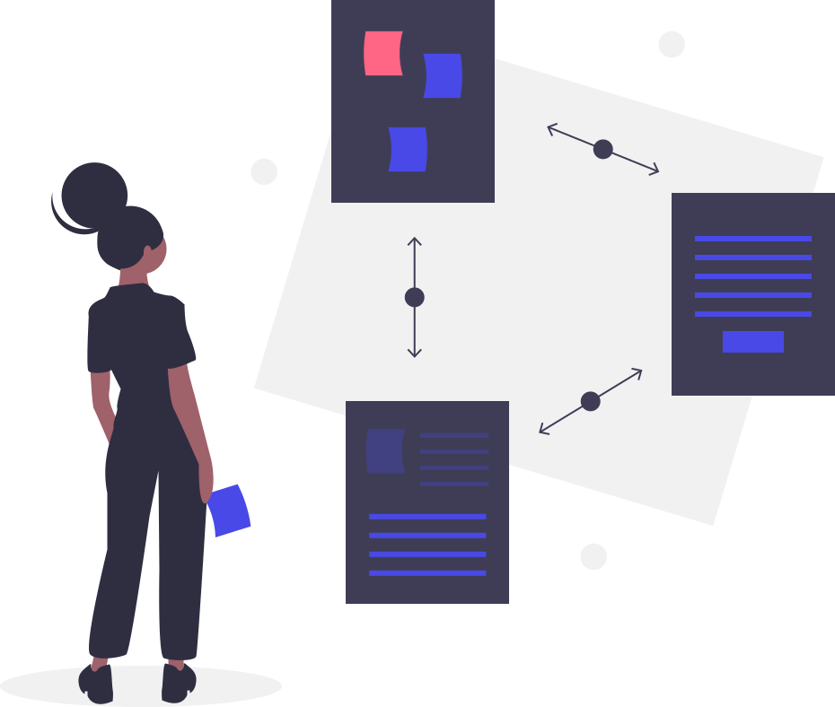

.lab
{ em função do conhecimento }
Uma trajetória
Quando navegamos pelo universo da Informação encontramos e desenvolvemos muitas ferramentas durante a viagem. Considero essencial organizar, centralizar e tornar disponível aquilo que se mostra relevante. Esse é o objetivo. Entenda o projeto.
# Faça você mesmo sua trajetóriagit clone https://gitlab.com/getchipman/lab.git
Um Blog
"Ao criar uma unidade que quantificava a informação, o jovem Claude de Shannon realizava em seu campo o mesmo que Isaac Newton havia feito com a física, séculos antes: dar consistência ciêntifica e metodológica a décadas de teorias e especulações. Na esteira do transistor, o trabalho de Shannon abriu as portas para o que hoje chamamos de Era da Informação." — A Informação, James Gleick. Acompanhe o Blog.
O fluxo de estudo
Problema => Base de conhecimento => Lab => Projeto => Solução
Durante a análise inicial meu conhecimento indica o quanto estou preparado ou não para resolver tal problema. Nessa etapa qualquer dependência deve ser adicionada a base de conhecimento. Após atender os requesitos apresentados posso desenvolver laboratórios para testar caminhos possíveis. Quando finalmente, em posse da solução, obtenho o projeto. Que deve ser executado a partir de boas práticas; sendo devidamente testado, automatizado e documentado.

0. Base de conhecimento
Uma pedra de cada vez; eu não me preocupo com o topo da montanha, eu me ocupo em subir; a mutação é constante, a informação é infinita; o medo vem de olhar para trás, a ansiedade vem de olhar para cima; mas o verdadeiro problema é real e concreto, por sorte essa máquina é minha amiga; uma pedra de cada vez; o conteúdo é fragmentado, a realidade é imediata; mas isso não é uma competição, ninguém precisa lhe reconhecer; separe as tarefas, dedique o processamento; deixe as pedras pelo caminho. Consulte a base.

1. Laboratórios
Os labs podem ser criados e utilizados nos mais diferentes níveis de abstração, desde um virtualenv em Python até VM's num servidor Proxmox. O importante é isolar o ambiente de desenvolvimento, explorando os recursos de cada ferramenta para otimizar o trabalho. Veja alguns exemplos.

1.1 Testar, 1.2 Automatizar e 1.3 Documentar
É fundamental não reinventar a roda, pesquisa e documentação evitam o retrabalho; na medida do possível as tarefas repetidas devem identificadas, otimizadas e delegadas para máquina; ela só precisa de instruções e consistência; separe e teste responsabilidades, assim tudo vai funcionar e crescer como uma bela fractal. Leia a documentação do chipman.lab

2. Projeto
Após solucionar um problema de forma satisfatória, o Lab ou o conjunto deles, podem virar um projeto. Ganhando um repositório e uma documentação dedicada. Aqui eu vou montar um index dos trabalhos realizados, contendo o roadmap de cada item, do problema até a solução, documentando apenas os labs suficientemente genéricos e passíveis de reutilização em outros projetos. Saiba mais sobre os projetos.